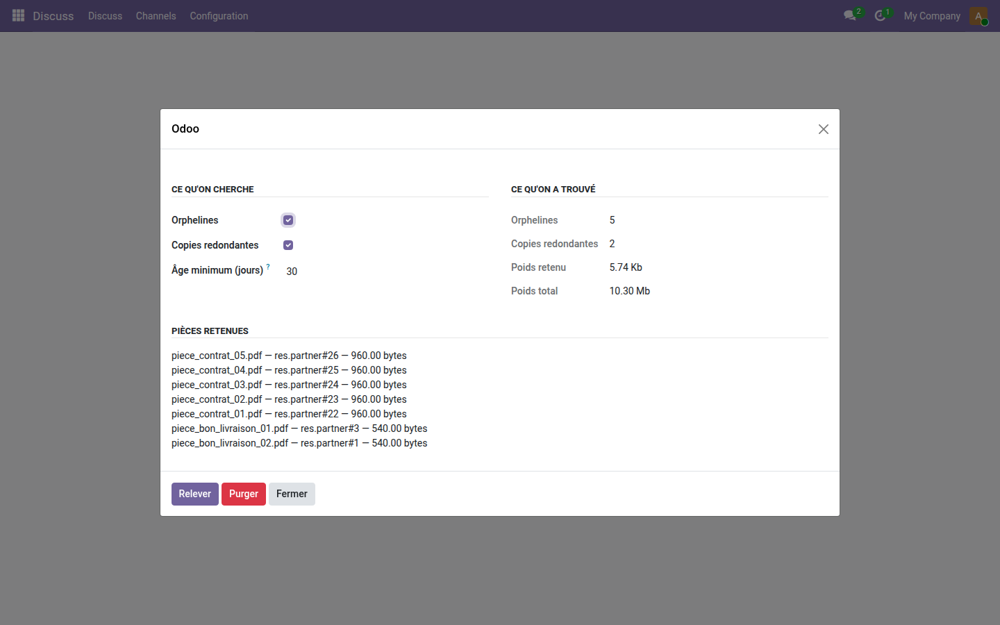
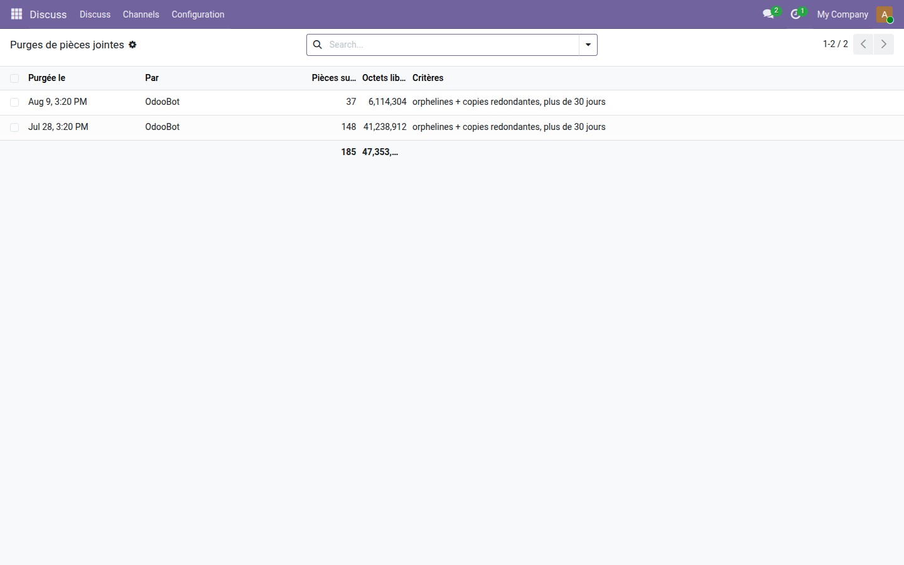

Nettoyage des pièces jointes
Orphelines, copies redondantes, poids du magasin de fichiers — et une purge qui laisse une trace.
Le magasin de fichiers d'une base vieillit mal. Des migrations, des suppressions en cascade au niveau de la base, des imports ratés laissent derrière eux des pièces jointes qui ne désignent plus rien. Odoo n'en propose aucun inventaire, et sa purge automatique ne touche qu'à ce qu'il a lui-même produit.
Ce que ça apporte
- 🔎 Un relevé avant tout — le module compte, pèse et nomme ; il ne supprime que sur un second geste.
- 🧷 Deux critères, pas un de plus — les orphelines, et les copies redondantes du même document. La même pièce sur deux documents différents n'est jamais touchée : un contrat type attaché à deux clients doit le rester.
- 🛡️ Un filet de sécurité explicite — valeurs de champs binaires, fichiers servis par une URL, pièces publiques, vues, et tout ce qui est plus récent que l'âge minimum : jamais proposés.
- 🧾 Chaque purge laisse sa trace — qui, quand, combien de pièces, combien d'octets, sur quels critères, et la liste des fichiers supprimés.
Aperçus réels
1. Le relevé, avant toute suppression
Cinq orphelines et deux copies redondantes, nommées une à une avec leur document d'origine et leur poids. Le poids total du magasin est rappelé à côté, pour mesurer ce que la purge changerait réellement.

2. Ce qui a été purgé, et par qui
Chaque purge est archivée : la question « qui a supprimé ces fichiers ? » ne reste pas sans réponse.

Pourquoi l'adopter
- La purge rejoue le relevé au lieu de faire confiance à la sélection enregistrée : entre les deux, la base a continué de vivre.
- Une pièce dont le modèle a disparu avec son module n'est pas déclarée orpheline : réinstaller le module la rendrait utile, et une purge est sans retour.
- Module gratuit, licence LGPL-3 — aucun abonnement, aucune dépendance extérieure.
Pour aller plus loin
Nettoyer les pièces jointes est un entretien ; les organiser est un métier. La gamme OdooSkills propose une gestion documentaire complète — classement, versions, droits par dossier, signature électronique. Catalogue complet : apps.odooskills.com.
Licence LGPL-3 — compatible Odoo 19.0 Community et Enterprise. Support : support@odooskills.com.